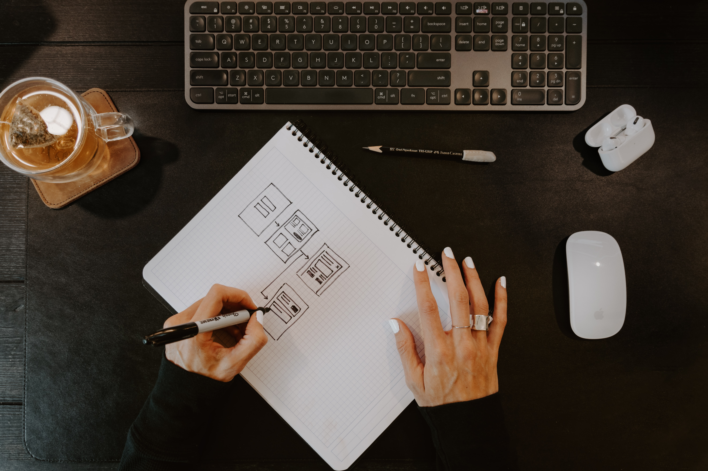

HTML is the standard markup language for creating web pages and web application.
2022 was a challenging year for many, and you are probably feeling apprehensive as to what 2023 might have in store.
If you are thinking you are a good fit for a career in UX design, you may be wondering if now is really the right time to do it. Is the UX job market still booming? Would you want to be a UX designer in a startup or at a more established company? What is it like to work as a UX designer now that remote work is becoming the new norm? And, most importantly, how can you successfully start a new career and forge your UX design career path?